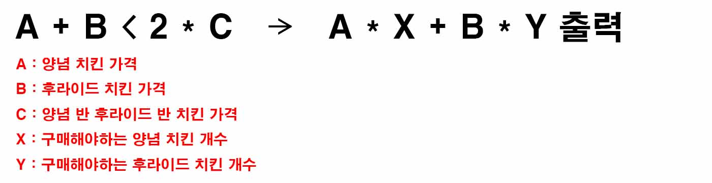
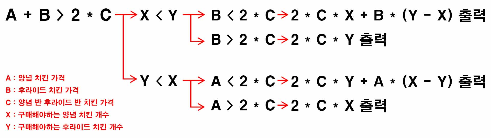

백준 16917. 양념 반 후라이드 반
- https://www.acmicpc.net/problem/16917
-
문제 :
현진 치킨에서 판매하는 치킨은 양념 치킨, 후라이드 치킨, 반반 치킨으로 총 세 종류이다. 반반 치킨은 절반은 양념 치킨, 절반은 후라이드 치킨으로 이루어져있다. 양념 치킨 한 마리의 가격은 A원, 후라이드 치킨 한 마리의 가격은 B원, 반반 치킨 한 마리의 가격은 C원이다. 상도는 오늘 파티를 위해 양념 치킨 최소 X마리, 후라이드 치킨 최소 Y마리를 구매하려고 한다. 반반 치킨을 두 마리 구입해 양념 치킨 하나와 후라이드 치킨 하나를 만드는 방법도 가능하다. 상도가 치킨을 구매하는 금액의 최솟값을 구해보자. -
입력 :
첫째 줄에 다섯 정수 A, B, C, X, Y가 주어진다. -
출력 :
양념 치킨 최소 X마리, 후라이드 치킨 최소 Y마리를 구매하는 비용의 최솟값을 출력한다. -
풀이 :
양념 치킨(A), 후라이드 치킨(B)을 더한 값이 양념 반 후라이드 반(C) 2마리 값보다 작을 경우 양념 치킨(A) X마리 값, 후라이드 치킨(B) Y마리 값을 더한 값을 출력.

아닐 경우 양념 반 후라이드 반(C) 2마리 값이 더 싸기 때문에 X와 Y값을 비교
○ X값이 작을 경우 후라이드 치킨(B) 값이랑 양념 반 후라이드 반(C) 2마리 값이랑 비교
● 후라이드 치킨(B) 값이 작을 경우 X값이 될 만큼 양념 반 후라이드 반 치킨(C)를 구매( X * (2 * C) )하고 나머지 사야하는 후라이드 치킨 개수(Y - X)만큼 후라이드 치킨을 구매( B * (Y - X) ), 이걸 합친 값을 출력.
● 양념 반 후라이드 반(C) 2마리 값이 작을 경우 양념 반 후라이드 반(C)을 Y마리만큼 구매( Y * 2 * C )한 값을 출력
○ Y값이 작을 경우 양념 치킨(A) 값이랑 양념 반 후라이드 반(C) 2마리 값이랑 비교
● 양념 치킨(B) 값이 작을 경우 Y값이 될 만큼 양념 반 후라이드 반 치킨(C)를 구매( Y * (2 * C) )하고 나머지 사야하는 양념 치킨 개수(X - Y)만큼 후라이드 치킨을 구매( A * (X - Y) ), 이걸 합친 값을 출력.
● 양념 반 후라이드 반(C) 2마리 값이 작을 경우 양념 반 후라이드 반(C)을 X마리만큼 구매( X * 2 * C )한 값을 출력
(최소 금액을 출력하는 것이 정답이기 때문에 기존 개수(X, Y)보다 더 사도 된다)
